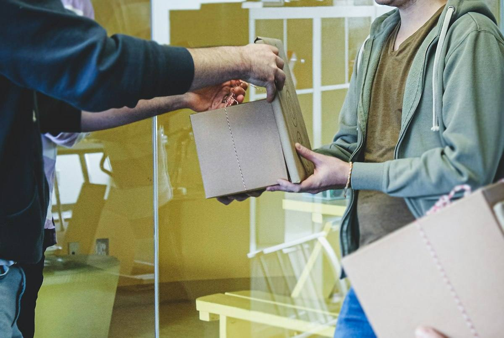
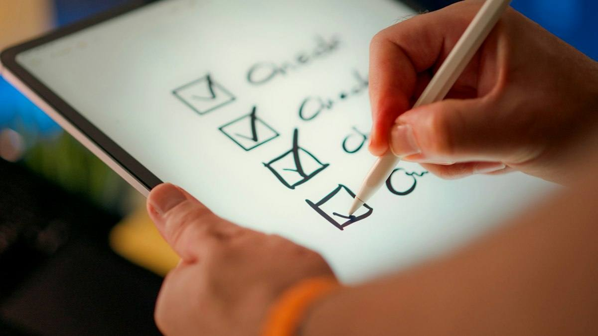

Warm-up · Delegating or avoiding?

Delegating = you give the task and you still follow up.
Avoiding = you give the problem to someone else and you don't want to know.
Delegating or avoiding?
Teacher notes · §1 Warm-up
Pedagógica
- Lee las cuatro frases con tono natural; el alumno decide y justifica con because. No expliques aún ask / let / tell: aparecen dentro de las frases y se descubren en §3.
- Si responde en español, haz recast en inglés. Máximo 4 minutos.
- Idea fuerza: delegar ≠ desaparecer. Delegating = dar la tarea + seguir dando seguimiento.
Engagement
- "¿Quién tuvo un jefe que desaparecía? ¿Y uno que no soltaba nada?"
- Cierra con: "Today you delegate clearly and stay accountable."
Crecimiento
- Registra cuántos reconocen la diferencia sin ayuda.
- Riesgo: Seguro. Temperatura: Mild.
Vocabulary · 12 words for delegating

Tap to flip · listen to the word and the example
0 / 12 flippedThe Cognate Trap
Score 0Answered 0 / 81. Each English word looks like a Spanish word. 2. Decide: same meaning, or a trap? 3. Right = +1. Calling a safe word a trap = −2. 4. For every trap, say ONE sentence with the real meaning.
One sentence for each trap word
Teacher notes · §2 Vocabulary
Pedagógica
- Voltea cada tarjeta: tú dices la palabra, el alumno repite y da su ejemplo. Falsos amigos marcados en el glosario: assist / asistir, attend / atender, realize / realizar, actually / actualmente; commitment ≠ compromise.
- VOC-08 The Cognate Trap (APUESTA): +1 por acierto, −2 si llama trampa a una palabra segura. Cada trampa exige una oración propia con el significado real. Grupo: debate en parejas antes de tocar. 1:1: tú lees la palabra y el alumno apuesta.
- Errores frecuentes: I assist the meeting (→ attend), I realize the report (→ I do / complete), Actually we have three trucks (→ Currently).
- Sin comparativos ni should.
Engagement
- "¿Quién cayó en la trampa? Tres puntos de ventaja al que explique por qué."
- Que cada trampa se diga con un ejemplo del trabajo real.
Crecimiento
- Guarda las trampas que falló cada alumno: es su lista de falsos amigos para el repaso de S8.
- Venta: un mini-curso de falsos amigos B2 para industria se vende solo.
Grammar · Ask · Tell · Let
Read the chat. Which patterns do you see?
Ana: I asked Pablo to prepare the schedule.
I let Lucía choose the supplier.
I told Omar to call me.
I am still responsible for the result.
Ask · Tell · Let
1 · Ask / tell
I asked Ana to prepare the room.
2 · Let
I let Ben choose the supplier.
3 · Still responsible
I am still responsible for the result.
| Statement, negative, question | Notice | |
|---|---|---|
| + | I asked Ana to call the client. I let Ben choose. | Ask / tell need to. Let does not. |
| − | I didn't ask Ana to call. I didn't let Ben choose. | didn't + base verb. |
| ? | Did you ask Ana to call? Did you let Ben choose? | Did + subject + base verb. |
Past tense: asked, told, let (let does not change). Advice with should comes in Block 3.
¿Qué es? Tres patrones para delegar: ask / tell + persona + to + verbo, let + persona + verbo (sin to) y still responsible for (sigues siendo responsable).
¿Cómo se usa? I asked Ana to prepare the room. I let Ben choose the supplier. I told them to call me. I'm still responsible for the result.
¿Para qué hoy? Para delegar con claridad: dices quién hace qué, qué decide la otra persona y qué sigues cuidando tú.
Cuidado: después de let no va to: I let Ben to choose. → I let Ben choose.
Choose the missing word
The Liar's Past: who is lying?
Round 1 / 2Questions 0Points 01. A manager tells you three things she did. One is a lie. 2. Say a question in English, then tap it to hear the witness. 3. Accuse A, B or C. 4. Fewer questions = more points.
Questions you can ask
Mistakes at this level
Teacher notes · §3 Grammar
Pedagógica
- Un solo punto de lengua: ask / tell + persona + to + verbo, let + persona + verbo, still responsible for. Explicación continua ≤5 min; el botón en español está oculto por defecto.
- Practice A es mecánica (≤1/3 del bloque). GRM-08 The Liar's Past (IMPOSTOR): la gerente miente en una de tres afirmaciones; el alumno formula preguntas con Did…? / Who…? / When…? y acusa. Menos preguntas = más puntos. Grupo: dos equipos compiten. 1:1: tú eres el testigo y puedes inventar respuestas adicionales.
- Claves: Ronda 1 → C (Omar nunca recibió la instrucción). Ronda 2 → B (Diego cambió todo el informe de Iván).
- Error prioritario: let to y asked + verbo sin to. Márcalos en voz alta cada vez.
Engagement
- "Hay una mentira. Tienes pocas preguntas: elige bien."
- Cada pregunta se dice primero en voz alta.
Crecimiento
- Registra preguntas usadas por ronda: indicador de precisión al preguntar en pasado.
- Venta: este formato se reutiliza en cursos de auditoría e investigación de incidentes.
Listening · Take the message

Ricardo leaves a voicemail for Marta. Marta must act on Monday. Listen, then build her message card.
Practice audio (browser voices). Final audio: record with ElevenLabs.
What is the message about?
Take the message: build Marta's action card
Marta cannot call Ricardo. She has only this card. Tap ONLY the actions that Marta must do. Then check the card.
The script
Ricardo · Mexican-accented English · male · fast, warm managerCheck the details
Listen · repeat · record your best
Teacher notes · §4 Listening
Pedagógica
- LIS-07 Take the Message (OCULTAMIENTO): el alumno no ve el guion; reconstruye la tarjeta de acciones que Marta necesita para actuar. Una buena tarjeta permite actuar sin volver a llamar. Primera escucha: gist. Segunda: tarjeta. Tercera: detalles.
- Guion: 191 palabras (B2: 180–300), 1 hablante. Contiene I asked Paco to, I let Julia choose, I told the night shift to y still responsible. Se muestra al final.
- Para grabar: Ricardo = inglés con acento mexicano, hombre, ritmo natural, tono cálido y rápido (cumple 1 de cada 3 guiones con acento no nativo). Un solo clip.
- Answer key. Gist: a client order (Harper). Acciones de Marta: revisar la lista de Paco el lunes por la mañana; pedirle a Julia el nombre del transportista hoy; confirmar a Ms. Lopez antes del martes a mediodía. NO son de Marta: elegir el transportista (decidió Julia), parar la máquina 4 (turno de noche), registrar el problema en la bitácora. Detalles: lista a las 6 pm; confirmación martes 12:00; Ricardo regresa el miércoles.
Engagement
- "Si fueras Marta, ¿qué harías primero el lunes?" (respuesta en inglés).
- Anota cuántas acciones correctas puso cada alumno en la primera pasada.
Crecimiento
- "In the speaking block you run a board meeting with secret goals."
Speaking · Board meeting, secret goals

Situation: 400 boxes for Harper must leave on Monday. 1. Choose your role. Read your secret goal (it disappears). 2. In 8 minutes, the board must assign all three tasks and decide who follows up. 3. Use asked… to, let, told… to and still responsible. 4. At the end, reveal the goals.
The task board
0 / 3 tasks complete12 questions · always 2 follow-ups
Teacher notes · §5 Speaking
Pedagógica
- SPK-07 Board Meeting with Secret Goals (ROL OCULTO): cuatro roles con meta secreta. Ana: asignar todo y decir qué deja decidir; Luis: no tolera sorpresas, quiere un responsable de seguimiento en cada tarea; Eva: está saturada, rechaza amablemente una tarea y ofrece una alternativa; Omar: quiere elegir el transportista y debe convencer a Ana.
- Al final se revelan las metas y se cuenta cuántas se cumplieron. La puntuación premia producir inglés, no la velocidad. Grupo: 4 por breakout. 1:1: el alumno elige un rol y tú juegas los otros tres.
- Marca 2 aciertos y 3 errores repetidos (let to, asked + verbo sin to, assist por attend). Feedback en §7.
- Límite de nivel: Eva rechaza con I can't take it, but I can assist…; sin should ni hipótesis.
Engagement
- "Todos tienen un secreto. Nadie sabe quién va a ganar."
- Pausa para la revelación: es el momento de mayor energía de la clase.
Crecimiento
- Registra qué metas se cumplieron y quién usó los tres patrones.
- Venta: este formato se vende solo en cursos de liderazgo y de gestión de proyectos.
Mission · The delegation plan
The Delegation Plan
You are the manager. Three situations need a plan today. For each one, delegate clearly: who does what, what you let them decide, what you still check, and how you follow up.
Group: each case goes to one student in a breakout room. Your partner asks “Who follows up?” once per case. Rotate every 3 minutes.
1:1: you brief the teacher. The teacher asks “What do you let them decide?” once per case.
Success: 3 cases, each with asked… to, let, still responsible and a follow-up time.
Teacher notes · §6 Mission
Pedagógica
- Marca cada movimiento solo cuando el alumno lo dice sin leer la tarjeta.
- Evidencia observable: asked / told + to, let + verbo, still responsible for y hora de seguimiento. Clave visible solo en Teacher view.
- No interrumpas: el feedback va en §7.
Engagement
- Anuncia en voz alta: "__ of 12 moves. Plan delivered!"
Crecimiento
- "In Session 8 you take your Checkpoint: five skills, one quiz, one personal record."
- Conecta con la tarea final: un plan de delegación real de 3–4 minutos.
Wrap-up · Better the second time
✓ Success
↑ Upgrade
✎ Repair
↻ 2nd try
Repeat one briefing with the teacher. Use the upgrades. Same task, better English.
60 seconds · 5 questions
My second try is better because…
You can delegate clearly and stay accountable.
Homework: write a delegation plan for a real task: who you asked, what you let them decide, what you still check, how you follow up (5 sentences). Next: Session 8.
Teacher notes · §7 Wrap-up
Pedagógica
- Máximo 2 aciertos y 3 correcciones de alto valor, anónimas. Luego segundo intento de un caso contigo.
- Exit quiz en voz alta: el alumno dice la respuesta antes del clic.
Engagement
- Compara con el §1: "Minute 1: delegate or avoid? Minute 58: you delegate and stay accountable."
Crecimiento
- Registra: puntaje de Cognate Trap, preguntas usadas en Liar's Past, tarjeta de acciones y metas cumplidas.
- Antes de S8 (Checkpoint): pide al alumno una lista de 3 errores que quiere repasar.